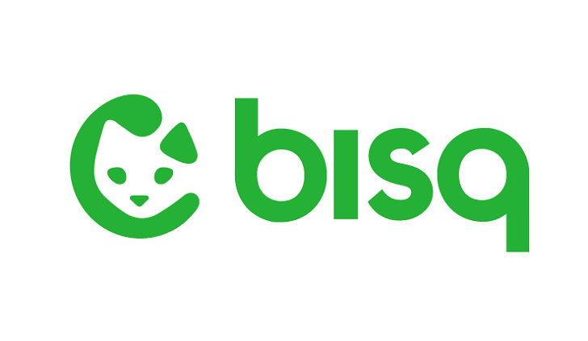
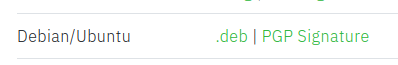
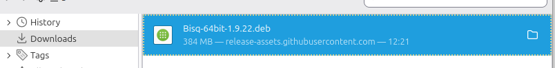
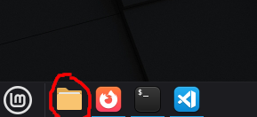
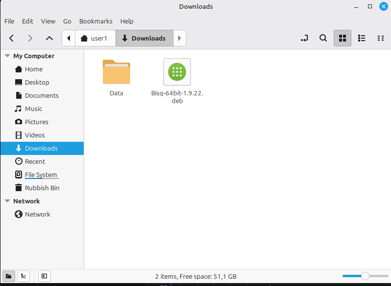
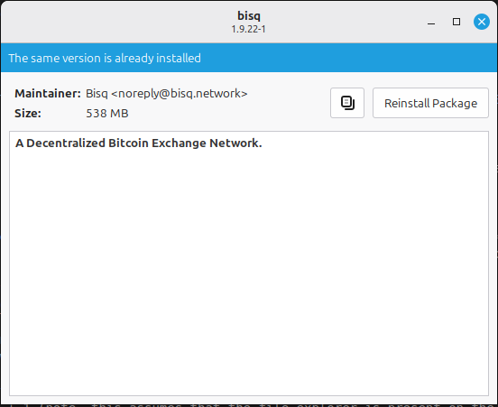
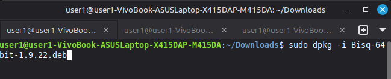
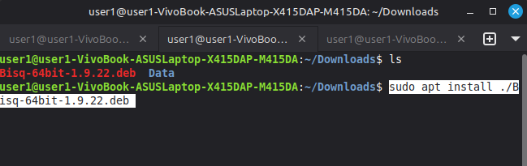
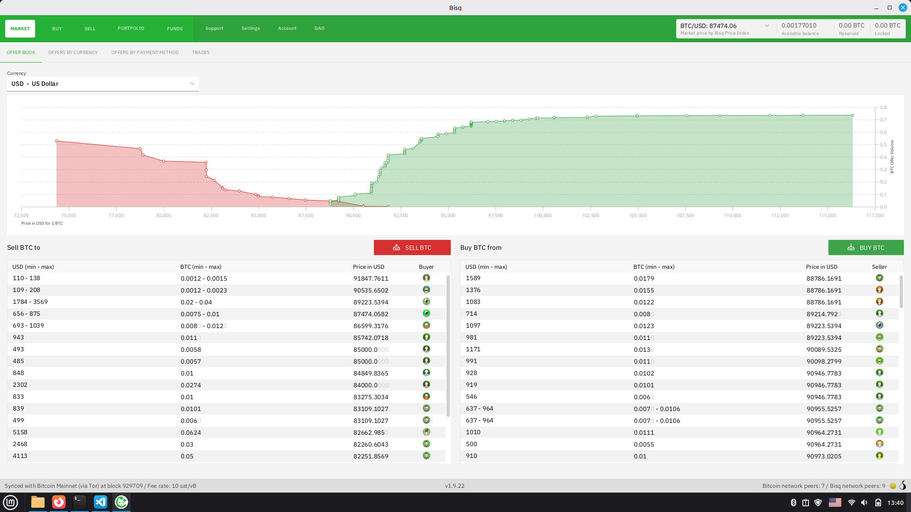

Written: 26/12/2025
Bisq: The Sovereign DEX 
What is Bisq?
Bisq is a DEX (Decentralized Exchange) service.
It is a software that enables users to anonymously sell/buy crypto such as bitcoin.
How to get it?
In order to use Bisq, you first need to install it, you do this by going to the official bisq website, choose your operating system and follow the steps there. I will run you through the linux option. I am using Linux Mint in this case which is an Ubuntu based distro.
You download the .deb file for Debian/Ubuntu:
Wait for the file to download:
Once downlaoded, you have two options to install.
Option 1: File Explorer (Beginner friendly)
You go to the file explorer, by pressing the shortcut win + e or win + 1 (note, this assumes that the file explorer is present on the panel at the bottom, on the first position):  
You right click on the downloaded .deb file, and select "Open with package installer" and press install (Please note, I've installed it already so the option in the example is to reinstall it):
You will most likely be prompted to enter your admin/root password, you enter it, proceed and Bisq is installed on your system.
Option 2: From terminal 
This is the standard and "Pro" way to install software on Linux systems.
There are two ways/commands which we can use here:
The dpkg command. We can use it as below:
sudo dpkg -i Bisq-64bit-1.9.22.deb
or apt:
sudo apt install ./Bisq-64bit-1.9.22.deb
Note, ensure that you are in the "Downloads" directory/folder, or you would need to specify the full path as:
/Downloads/Bisq-64bit-1.9.22.deb
Congratulations! Bisq is now installed on your computer:
In the next tutorial we are going to be exploring Bisq, how accounts are set up and how to use Bisq to buy/sell cryptocurrencies for fiat cryptocurrencies.